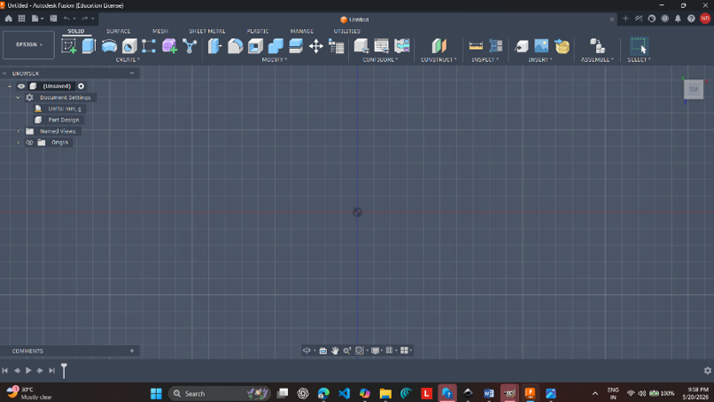
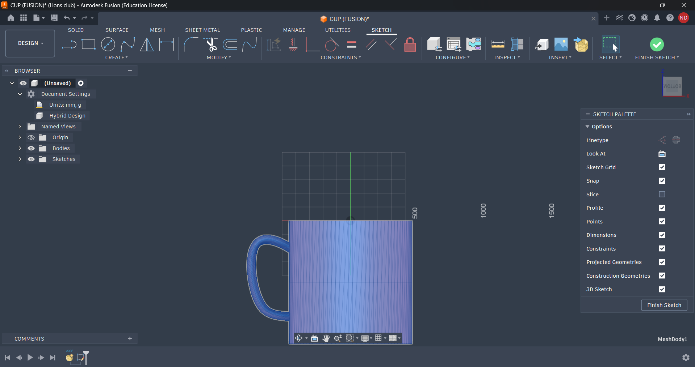
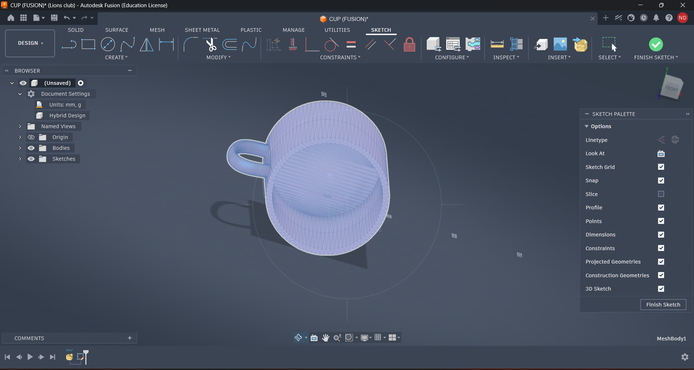
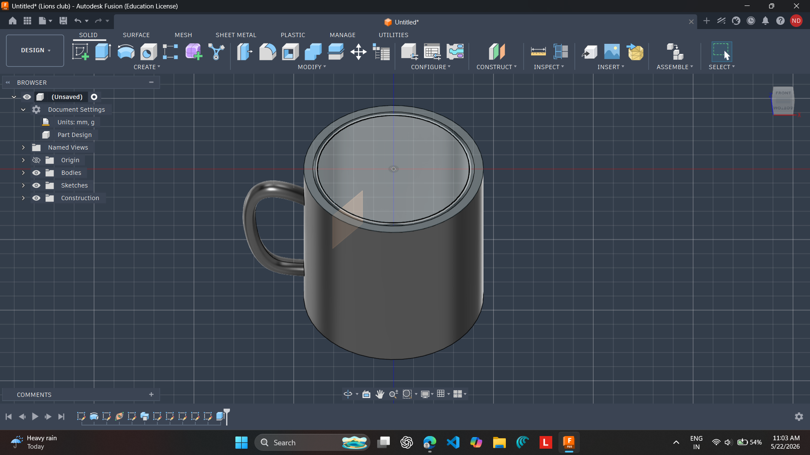
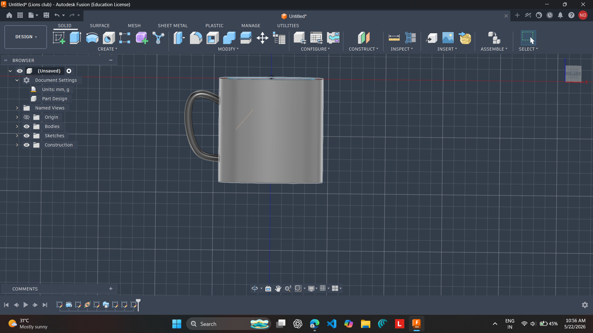

Week 1 - Day 5
← Back to Portfolio
Internship Report – Day 5
Objective
To practice 3D modeling in Autodesk Fusion 360 by designing a cup with a handle, applying sketching, extrusion, shelling, sweeping, and text engraving techniques.
Tools Used
- Autodesk Fusion 360 (Education License)
- GitHub – for version control and project storage
- VS Code – for documentation writing
Step 1: Starting the Design
- Opened Fusion 360 and created a new project file.
- Set units to millimeters for accurate dimensions.

Step 2: Sketching the Cup Base
- Drew a circle on the XY plane.
- Defined the diameter and wall thickness.

Step 3: Extruding the Cup Body
- Used the Extrude tool to create the cylindrical cup body.
- Applied the Shell tool to hollow the cylinder.

Step 4: Adding the Handle
- Created a path sketch for the handle.
- Used the Sweep tool to form the cup handle.
- Attached the handle to the cup body.


Step 6: Refining & Saving
- Smoothed edges using the Fillet tool.
- Saved the model as a Fusion (.f3d) file.
- Exported rendered images of the cup design.
Step 7: Documentation & GitHub Push
- Created project documentation in VS Code.
- Added workflow explanations and screenshots.
- Saved documentation as a Markdown file.
- Pushed project files to GitHub.
GitHub Commands Used
git add .
git commit -m "Added Day 5 cup modeling project"
git push origin main
Outcome
- Successfully created a personalized cup model with a handle.
- Learned sketching, extrusion, shelling, sweeping, and engraving tools.
- Documented the complete workflow professionally.
- Integrated the project with GitHub for version control.
Reflection
Day 5 improved both my CAD modeling and documentation skills. Designing the cup helped me understand how different Fusion tools work together to create realistic products. Writing detailed documentation and pushing files to GitHub taught me the importance of professional workflows and version control.
Conclusion
Day 5 combined creativity, technical design, and documentation practices. I successfully modeled a personalized cup with a handle and documented the full workflow using VS Code and GitHub. This experience strengthened my understanding of engineering design and collaborative development processes.
← Back to Portfolio